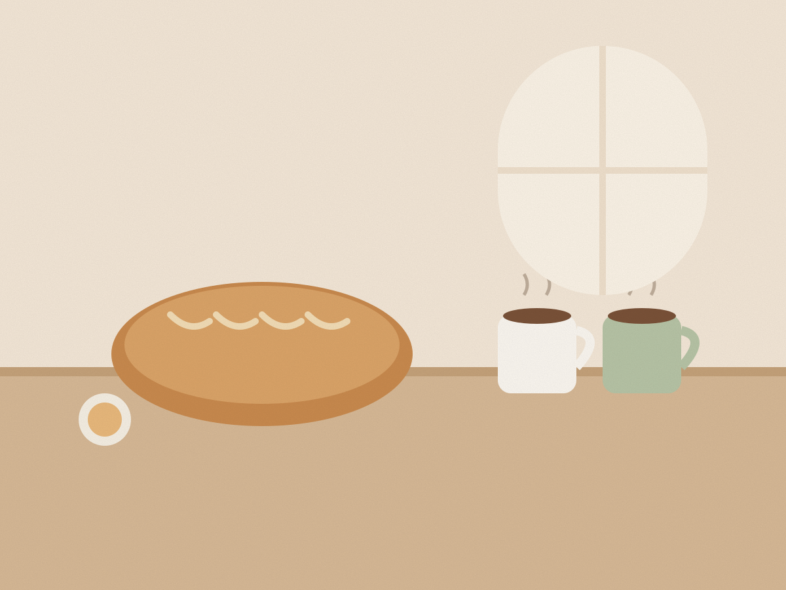
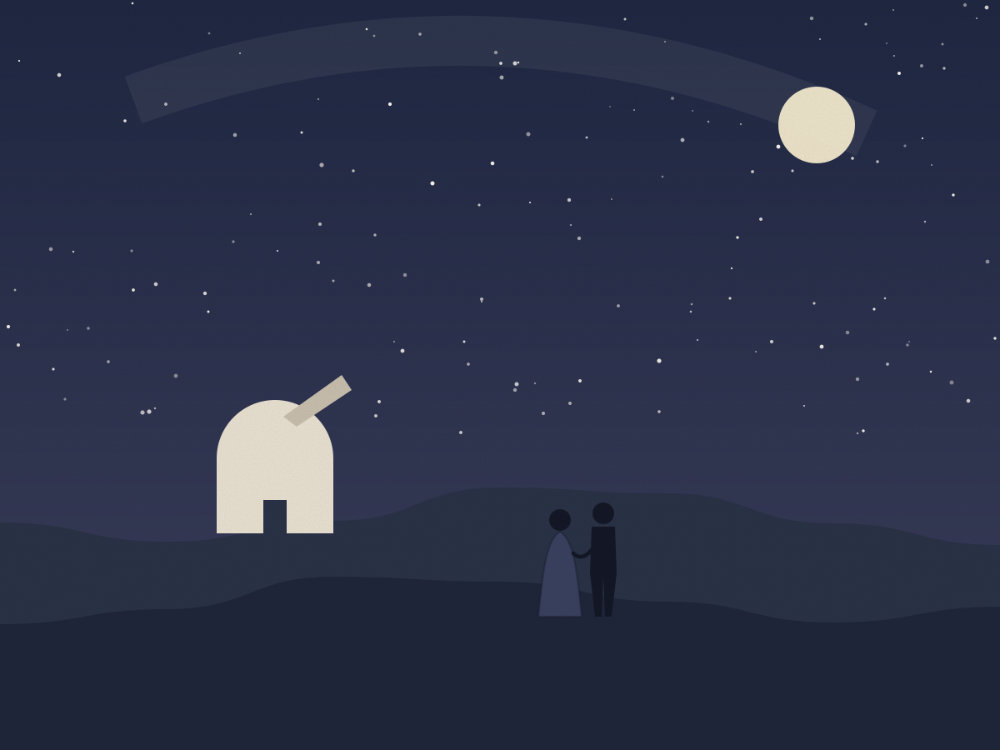
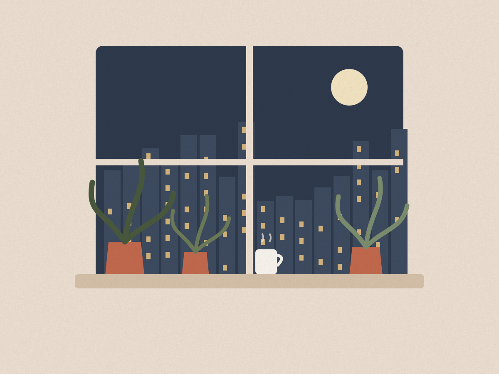
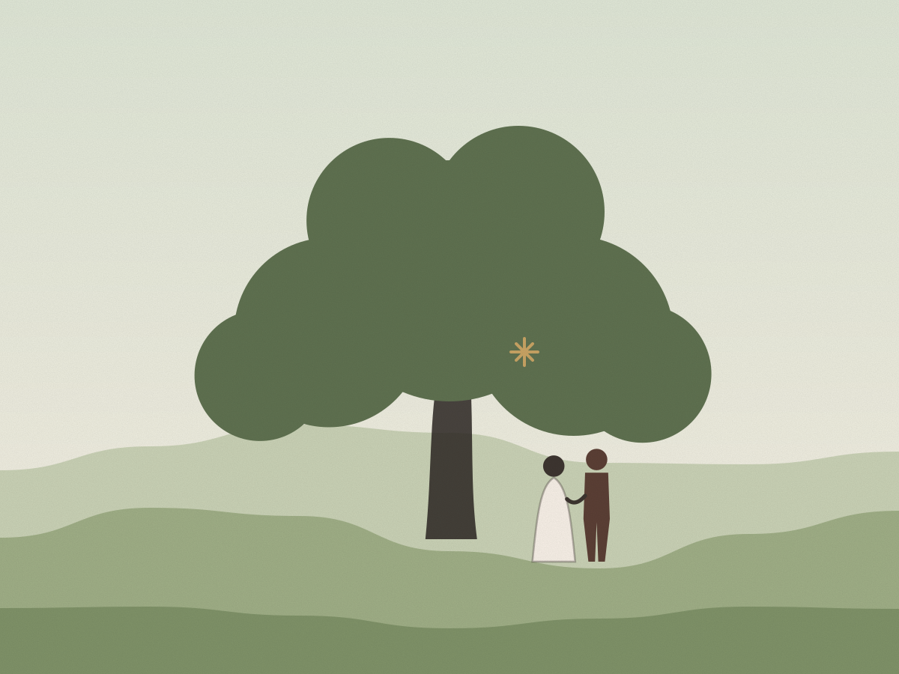
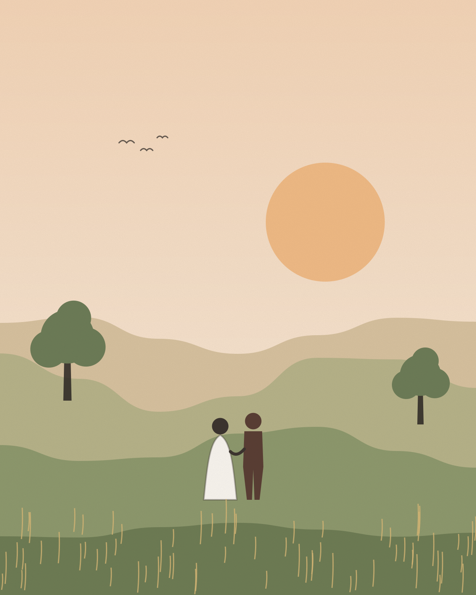

Our story
Six years, one dog, and a lot of cinnamon buns
Some of you were there for all of it, some of you are just meeting us. Here's how two people who reached for the same pastry ended up planning a wedding.
-

2019
The last cinnamon bun
A rainy Saturday at Dough & Daughter on Linden Street. One cinnamon bun left, two people reaching for it. Theo offered to split it; Amara offered to split the umbrella home. Both were accepted.
-

2020
Letters across the country
A year of living 300 miles apart, a shoebox of postcards and one borrowed telescope. Our first trip was a freezing night on a hillside, counting shooting stars and pretending not to be cold.
-

2022
Fourth floor, no lift
We moved into a tiny flat with a big window, adopted Rosie (a scruffy terrier with opinions) and started a plant collection that is now, frankly, out of control.
-

2025
Under the old oak
On a walk above Hollowmere, Theo stopped under the old oak, got down on one knee and forgot every word of his speech. Amara said yes before he found them again.
-

2027
Hollowmere House
We're getting married in the walled garden a mile from that oak tree, and we would love you to be there.
“I knew on the walk home. She held the umbrella the whole way and somehow I was the one who stayed dry.”